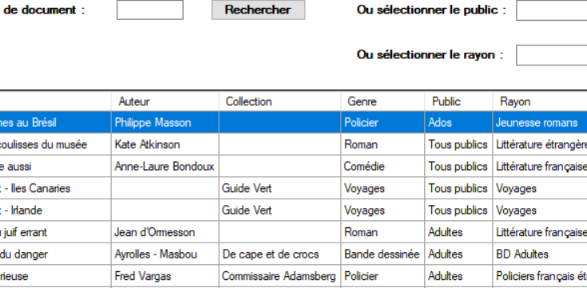

MediaTek86 Documentaire
Cette application bureau développée en C# permet la gestion des ressources documentaires de la médiathèque selon le niveau d'habilitation des employés, ainsi que le suivi des commandes.

Aimant créer des solutions numériques utiles pour autrui, je serais ravie de vous proposer mes services! View Resume
Cette application bureau développée en C# permet la gestion des ressources documentaires de la médiathèque selon le niveau d'habilitation des employés, ainsi que le suivi des commandes.
Cette application de bureau java permet aux personnes migraineuses d'avoir à portée un journal dans lequel, elles peuvent inserer diverses données sur leurs migraines afin de mieux appréhender leurs apparitions par l'intermédiare d'un suivi par épisode migraineux.
Automatisation de données comptables vers Sage X3
Interfaces de migration des données web

Application Android développée en Java permettant d’avoir accès aux vidéos de formations du réseau de médiathèques.

Une veille est un outil important dans le domaine de l'informatique qui évolue sans cesse. Ma veille technologique porte sur le framework Laminas. Quant à ma veille juridique, celle-ci porte sur la sécurité sur le web et les outils permettant de rester vigilant.
Automatisation de mise à jour des données entre les appareils en boutique physiques d'Aroma-Zone.
Application bureau en C# permettant la gestion des informations de son personnel oeuvrant dans son réseau ainsi que de gèrer leurs absences respectives par l'intermédiaire d'une base de données.
noeline.marie.dev@gmail.com